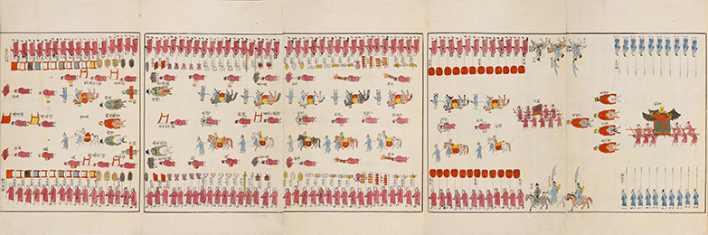
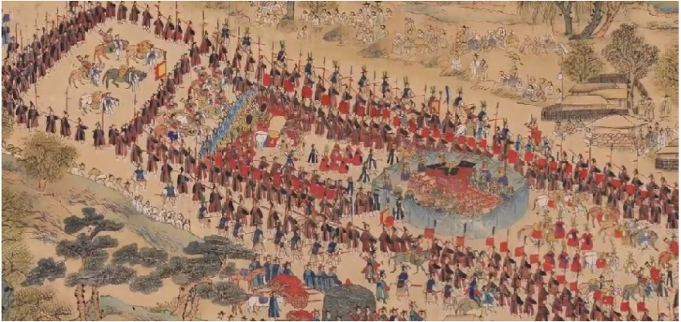
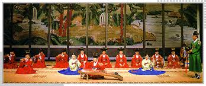

디테일로 읽는 왕실 기록, 장면으로 느끼는 조선의 시간

복식

인물
큐레이터가 고른 오늘의 이야기
방상시(方相氏)를 찾아라!
위례 중국의 신(神)으로, 곰의 가죽을 두르고 네 개의 황금 눈이 박힌 가면을 썼으며 손에는 창과 방패를 든 모습으로 묘사됩니다.

정조의 화성행차는 어땠을까?
정조는 어느 왕보다도 궁궐 밖 나들이인 행행(行幸)을 자주했다. 재위 24년간 총 66회의 행행을 했으며...
독자가 선택한 장면
👁 가장 많이 본 의궤 문서
- 1. 수원 화성성역의궤 12,345회
- 2. 정조대왕 능행차 반차도 9,870회
- 3. 동의보감 (언해본) 7,654회
- 4. 조선왕조실록 (세종편) 6,233회
- 5. 영조 어진 제작 기록 5,432회
📺 인기 왕실 의례 장면
- 왕세자 가례 (혼례) 의례 조선 전기
- 임금 행차 의례 정조대왕
- 종묘대제 (종묘 제례악) 국가 제례
- 궁중 연회 (진연) 고종 즉위
- 농업 장려 의례 (친경) 성종대왕
🔖 사용자들이 즐겨찾는 문서
- 세종대왕의 한글 창제 일화 ♥
- 이순신 장군의 난중일기 번역본 ♥
- 조선 시대 건축 양식 분석 ♥
- 해학반도도 상세 해설 ♥
- 궁중 의상 도감 ♥
왕실의 하루 BGM

수제천 (壽齊天)
국립국악원
❚❚
- FLOWER - Jisoo 3:05
- Shape of You - Ed Sheeran 3:53
- Blinding Lights - The Weeknd 3:20